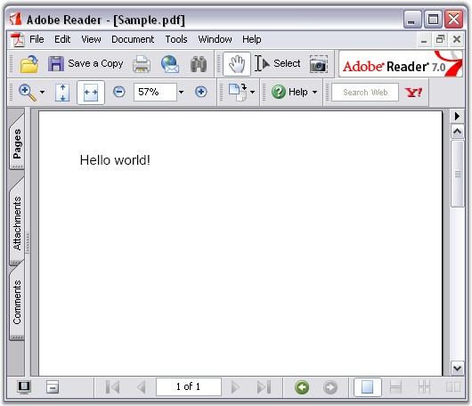

Now, you have created a Silverlight application (refer Creating Platform Application). This section covers the following:
· Deploying Essential PDF in a Silverlight Application
· Create and add a PDF document with pages to the application
Deploying Essential PDF in a Silverlight Application
The following steps will guide you to deploy Essential PDF:
1. Open the MainPage.xaml of the application in the designer.
2. Add the following assemblies as references in the application:
· Syncfusion.Compression.Silverlight.dll
· Syncfusion.Pdf.Silverlight.dll
Essential PDF is now deployed in your Silverlight application.
Create and add a PDF document with pages to the application
Following steps will guide you to create and add a PDF document to this application:
1. Create a PDF document using the following code.
The PDF document represents the document that is created in the memory. It is only the memory representation of the PDF document that is written to the disk.
|
[C#]
// Create a new PDF document. This object represents the PDF document. // This document has one page, by default. Additional pages have to be added. PdfDocument pdfDoc = new PdfDocument(); |
|
[VB.NET]
' Create a new PDF document. This object represents the PDF document. ' This document has one page, by default. Additional pages have to be added. Dim pdfDoc As Syncfusion.Pdf.PdfDocument = New Syncfusion.Pdf.PdfDocument() |
A new PDF document is created.
2. Add a new page to the created document.
|
[C#]
// Add a page to the document PdfPage page = doc.Pages.Add(); |
|
[VB.NET]
'Add a page to the document Dim firstPage As Syncfusion.Pdf.PdfPage = doc.Pages.Add() |
A PDF page is added to the document (doc).
3. Write the string "Hello World" on the first page in the PDF document. This task is further subdivided into the following tasks.
· Create the font object to be used for writing the "Hello World" string. You can set the font size and style in the same statement.
· Write the text using the DrawString method of the Graphics object.
|
[C#]
// Use the predefined fonts to draw the text. PdfFont font = new PdfStandardFont(PdfFontFamily.Helvetica, fontSize, fontStyle);
// Draw the string at the specified coordinates. firstPage.Graphics.DrawString("Hello World", pdfFont, PdfBrushes.Black, 0, 0); |
|
[VB.NET]
' Use the predefined fonts to draw the text. Dim font As Syncfusion.Pdf.Graphics.PdfFont = New Syncfusion.Pdf.Graphics.PdfStandardFont(PdfFontFamily.Helvetica, fontSize, FontStyle)
' Draw the string at the specified coordinates. firstPage.Graphics.DrawString("Hello World", pdfFont, PdfBrushes.Black, 0,0) |
The string "Hello World" is written to the document.
4. User can save the generated PDF document to their specified locations with the help of the SaveFileDialog class by streaming the generated PDF document.
|
[C#]
// Create instance for SaveFileDialog SaveFileDialog sfd = new SaveFileDialog() { DefaultExt = "pdf", Filter = "Text files (*.pdf)|*.pdf|All files (*.*)|*.*", FilterIndex = 1 };
if (sfd.ShowDialog() == true) { using (Stream stream = sfd.OpenFile()) { // Save the PDF document in the user specific location pdfDoc.Save(stream2); } }; |
|
[VB.NET]
'Create instance for SaveFileDialog Dim sfd As SaveFileDialog = New SaveFileDialog() "Text files (*.pdf)|*.pdf|All files (*.*)|*.*", FilterIndex = 1 "pdf", Filter = "Text files (*.pdf)|*.pdf|All files (*.*)|*.*", FilterIndex DefaultExt = "pdf", Filter
If sfd.ShowDialog() = True Then Using stream As Stream = sfd.OpenFile() ' Save the PDF document in the user specific location pdfDoc.Save(stream2) End Using End If |
The created pdf document is saved to the disk using the above code.
5. Finally close the PDF Document using the following code, so that the objects are released.
|
[C#]
// Release the common resources. pdfDoc.Close();
//(or)
//Releases document stream. This releases entire document PdfDoc.Close(true); |
|
[VB.NET]
' Release the common resources. pdfDoc.Close()
'(or)
'Releases document stream. This releases entire document PdfDoc.Close(True) |
PDF document will be closed after saving.
The sample pdf document created through the above procedure is shown below.

Figure 23: PDF Document with pages
A PDF document is created in the Silverlight application.